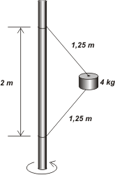
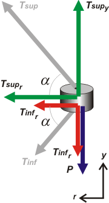

|
NO ME SALEN
PROBLEMAS RESUELTOS DE FÍSICA DEL CBC
(Leyes de Newton, dinámica del movimiento circular) |
|
|

|
| |
FIS 3.13 - El bloque de 4 kg de la figura está unido a una varilla vertical con dos sogas ideales iguales
de 1,25 m de longitud. Cuando el sistema gira sobre el eje de la varilla, las sogas se extienden (ver
figura) y la tensión que ejerce la soga superior es de 70 N.
a) ¿Qué tensión ejerce la otra soga?
b) ¿Con qué frecuencia, en RPM, debería girar el bloque en esas
condiciones?
c) Si el bloque girase manteniendo el mismo ángulo con la vertical que
en el ítem anterior, calcular la frecuencia necesaria, en rpm, para que
la tensión de la soga inferior sea nula.
d) Explicar cómo se movería el bloque si la frecuencia fuera menor que
la calculada en el ítem anterior. |
 |
|
Vamos a tener que conocer el ángulo con que las sogas toman al bloque. Trazá un triángulo rectángulo con las sogas oblicuas, la barraa desde del centro de giro hasta las ataduras de las sogas. La hipotenusa mide 1,25 m y el cateto sobre la varilla 1 m. |
|
|
Si trabajaste bien tenés que haber llegado a que el ángulo α vale 53°. Y ahí los tenés marcados dentro del mismo DCL. El radio de la circunferencia de giro, o sea el otro cateto del triángulo vale R = 0,75 m.
Entonces:
Tsupr = Tsup cos α
Tsupy = Tsup sen α
Tinfr = Tinf cos α
Tinfy = Tinf sen α
Vamos a las ecuaciones de Newton:
Tsupr + Tinfr = m aC
Tsupy = Tinfy + P
|
|
 |
|
|
|
Para conocer el valor de la cuerda de abajo alcanza con trabajar con las ecuaciones verticales:
Tsup sen α = Tinf sen α + P
De ahí:
Tinf = Tsup − P / sen α
Tinf = 70 N − 40 N / 0,8
|
|
|
|
|
|
Para conocer la frecuencia le pedimos que hablen las ecuaciones radiales:
Tsup cos α + Tinf cos α = m 4 π² f² R
De ahí despejo la frecuencia y la calculo:
f² = (Tsup + Tinf ) cos α / m 4 π² R
f² = 90 N . 0,6 . / 4 kg 4 π² 0,75 m
f = 0,68 s-1
Si lo querés en rpm... |
|
ac = ω² . R
= v² / R
= ω . v
= 4𲃲. R
= 4π²R / T²
= 2π v / T
= 2π v ƒ |
|
|
|
|
| c) Si el bloque girase manteniendo el mismo ángulo con la vertical que
en el ítem anterior, calcular la frecuencia necesaria, en rpm, para que
la tensión de la soga inferior sea nula. Bueno, es lo mismo que todo lo anterior pero partiendo de una tensión inferior nula. El valor de la tensión superior cambiará, por lo tanto la fuerza centrípeta disminuirá... y así encontrarás la nueva frecuencia que, obviamente, será menor que la anterior. (f = 30 rpm). |
|
|
| d) Explicar cómo se movería el bloque si la frecuencia fuera menor que
la calculada en el ítem anterior. Si la frecuencia disminuye la soga inferior se destensa , la superior sigue tensa pero haciendo mover a la masa en una circunferencia más chica que la original, más cerca de la varilla. |
|
|
| |
|
|
|
|
 |
| DESAFIO: |
|
| Algunos derechos reservados.
Se permite su reproducción citando la fuente. Última actualización abr-16. Buenos Aires, Argentina. |
|
|
|
|